MAP OF EARTH
Introduction
A map is a representation of the Earth on a flat surface. Contrary to the beliefs of those who believe the Earth is spherical, the Earth is flat. Looking back, we find that most maps were drawn on flat paper, and the earliest known model of a globe dates back to Martin Behaim around 1492. If we examine the maps of ancient civilizations such as ancient Egypt and the Maya, we find that their maps were flat, and the concept of a sphere was unknown.
Many countries are not as large or small as they appear on a conventional world map. All maps lie. All maps are wrong. As geographer Mark Monmoir argues, "It is not only easy to lie with maps, but necessary. Maps and globes, like speeches or paintings, are human creations and are susceptible to distortion. These distortions can occur through adjustments to scale, symbols, projection, simplification, and choices regarding the map's content." Monmoir continues, "To avoid obscuring important information in a fog of detail, a map must present a selective and incomplete view of reality." This is the cartographic paradox: to present an honest picture, a map must lie.
The second category of maps and charts available between the fourteenth and sixteenth centuries is known as the mappamundi. It is important to be clear that this is a very distinct and specific type of world map (because, in the texts of those times, other world maps of completely different types were also sometimes referred to as mappaemundi or mappamundi, when what was meant was just ‘world maps’ in the rather loose, general sense of ‘maps of the world’). So, to be clear, the mappamundi to which I refer here were normally hand-painted on cloth or vellum (hence the origin of the name mappamundi — meaning, literally, ‘Cloth of the World’).
History
Hindu
This stunning world map was made in Korea around 1800. It blends together religion and geography by focusing its attention on Mount Meru, which was reported to be the center of the world according to Hindu mythology. Two rings of water dotted with land surround the central continent.
It links the Sanskrit epic Ramayana, an ancient Indian epic (composed around 500–100 BC, but the story itself is older), which tells the story of Rama and his search for his wife Sita after her abduction, by the poet Valmiki, to a precise geographical description of the world during the last Ice Age (about 20,000–10,000 years ago). The claim focuses on the Kishkindha Kanda, which takes place in the kingdom of the monkeys (Kishkindha, near present-day Hampi in Karnataka). Sarga 40, verses 40+, where verses 1–39 focus on the Ganges River and nearby islands; verses 40+ extend to farther islands and hills. Verses 40–45 describe eastern hills and islands such as Buhlinga (possibly an island in the Bay of Bengal), and the Isles (multiple islands in the Indian Ocean), and golden hills filled with trees and animals. Verses 46–50 describe “terrifying” seas filled with raging waves, scattered islands (Dweepa), and the hills of Yava (modern Java) with seven kingdoms. Verses 51–55 mention other islands such as Sudarshana (beautiful to behold), and the hills of Damroo (drum-shaped), with golden trees and a magnificent sunrise, the Paracas Candelabra is claimed to resemble Sudarshana or Damroo, like the giant geoglyph in Peru (Paracas Candelabra, dating back to 200 BC). Verses 56–60 describe Udayadri (the Mountain of Sunrise), where the sun rises in golden colors, surrounded by trees amid the waves, where King Sugriva describes to the Vanaras (monkey warriors) the eastern regions of India to search for Sita. It is claimed that this description includes routes from central India to Myanmar, Indonesia, Australia, then the “terrible seas” (interpreted as the Pacific Ring of Fire), reaching South America with its tribes and the Paracas Candelabra, and finally Antarctica, connected to South America during the Ice Age. The “craziest” part is the description of Antarctica: the southern side glows with a red radiance (Aurora Australis), and behind it lies a region that connects the upper and lower worlds (possibly a mythical gateway), uninhabitable, dark most of the time due to the absence of sunlight (Polar Night).
Uttara Kanda, not Kishkinda! In Uttara Kanda (Book VII, a later addition), Ravana describes his journey to Yama Loka (the realm of Hell) to the south: a land white with snow, dark for six months (polar night), uninhabitable, and a gateway connecting the worlds (upper and lower). The southern side "glows red" (Aurora Australis, a rare red glow).
Babel
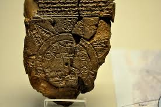
the Babylonian World Map (circa 6th century BCE) is one of the oldest known maps, and it does show the world as a flat circle.Circular world: The inhabited world (kiššatu) is shown as a flat disk surrounded by a circular waterway called the "Bitter River" (likely representing the ocean).
The Babylonians saw the world through myths, not measurement. The circle represented the cosmic order - the heavens a dome, the earth a disc. The map was found with cuneiform text describing: mythical islands "where the sun is not seen" and monsters and heroes (like the Epic of Gilgamesh).Discovered in Sippar (modern-day Iraq), it’s a small clay tablet (about 12 cm × 8 cm) inscribed in Akkadian cuneiform.
Beyond the Bitter River are 7–8 triangular regions (nagu), described as distant lands reachable only by long, perilous journeys. These may symbolize mythical or far-off places.
The back of the tablet includes descriptions of these regions, mentioning legendary figures like Utnapishtim (the Babylonian Noah).
The Babylonian "World Map" map is highly schematized: A double circle surrounds Babylon which appears on a rectangle in the center. This circle is labeled in cuneiform the Nar Marratum, translated to mean nar= "river," (Arabic: nahr= "river") marratum= "bitter" (Arabic: marah, myrrh, merra, murr, murrat also mean "bitter").The common scientific explanation is that this circular river is called "bitter" because it represents the cosmic ocean surrounding Earth, which contains bitter, salty water. Therefore, some scientists translate "bitter river" more literally as "bitter sea."
Several small ovals ringing Babylon within the Nar Marratum have been identified as being cities. To the SE of Babylon appears Deri, to the NE of Babylon is Asshur and Armenia, to the NW of Babylon is Habban and to the SW of Babylon is Bit-Ya'kin ( bit= "house" or "tribe" of Ya'kin" or Ja'kin). Modern scholarly maps today place the region of Bit-Ya'kin (Bit-Jakin) as SE of Babylon and E of the city of Ur and W of the Hor al Hammar Lagoon in Lower Mesopotamia (modern Iraq).
The number of triangles in the map represents 7 parallel worlds or cosmic layers. This is close to the sayings of the Prophet Muhammad, who mentioned the existence of seven earths, and next to it is mentioned in the Holy Quran: “Allah is He Who created seven heavens and of the earth, the like of them” (At-Talaq: 12).
buddhist
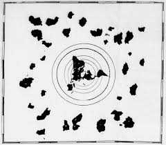
Chinese
There are ancient historical and mythological texts that refer to the use of maps or geographical drawings in ancient China, particularly in the context of the Xia dynasty (c. 2070-1600 BC, which is semi-mythical) and the Shang dynasty (c. 1600-1046 BC, which is supported by archaeological evidence).
Islam
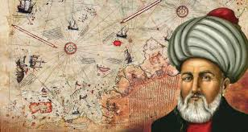
Sultan Suleiman the Magnificent dispatched him to reclaim the eastern regions of the Arabian Peninsula, including Yemen and the eastern part of the Arabian Peninsula (encompassing Aden, Bahrain, Basra, and extending to the borders of Khorasan and Hormuz). This was to repel the joint Portuguese-Safavid invasion. The campaign failed because Hormuz was not reached. However, this hero's greatest achievement was the creation of an accurate world map of the Americas and Africa. It's noteworthy that the map was completed in 1525, while the concept of Native Americans and the discovery of the Americas by Columbus were only present in 1492. This period is insufficient to depict the geographical features of any region, especially considering the absence of modern methods for surveying terrain.
Europe
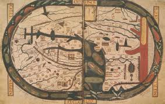
The Beatus maps are a particularly strange subset of medieval maps. The maps were meant to accompany the Revelation commentary of Beatus of Liébana, a Spanish monk from the 8th century. So 776, is the date normally given for the original composition of his commentary. The earliest surviving Beatus map, the Morgan Library Beatus, dates from the mid 10th century. These maps contain a variety of unusual features as compared with most other detailed maps of the later Middle Ages. In particular, they tend to favour Libya over Africa, and have a stronger than usual division between Africa and Ethiopia; they normally depict the fourth 'continent' of the antipodes; they have a particularly stylised depiction Eden, often containing a depiction of Adam and Eve; they often highlight the graves of the apostles.A dozen or so Beatus maps survive, but the St Sever Beatus is unusual in that it contains more geographical details than most other maps of this sort.
Changes
Africa
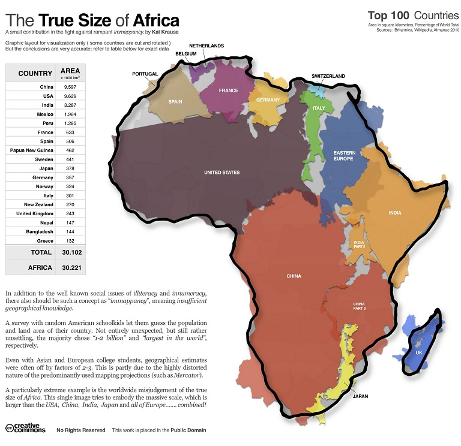
The map stretches the North and South poles, making Europe and a few other countries appear larger than they are. Meanwhile, countries in Africa are projected smaller than their actual size.
This means the Mercator Map doesn't only represent land mass; it was also influenced by social and political factors. In simple words, certain countries were shrunk to make the smaller countries look bigger, as bigger countries on a map give the perception of a stronger nation.
Greenland and Africa, for example, look to be essentially the same size. In reality of course Africa is about 14 times larger than Greenland.
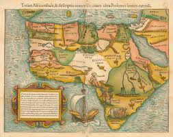
The map "Totius Africae" by the Dutch author Willem Blaeu, circa 1600–1617 (a hand-colored Latin version), contains several interesting—if not bizarre—features: a one-eyed giant perched above Nigeria and Cameroon, representing the mythical Monokole tribe; a dense forest located in what is now the Sahara Desert; and an elephant filling South Africa. The Niger River begins and ends in the Lakes. The source of the Nile is in two lakes fed by waters from the mythical Mountains of the Moon, which are graphically represented as small brown hills. Several kingdoms are mentioned, including that of the legendary priest John, as well as Meroe, the mythical tombs of the Nubian kings. A few coastal cities are mentioned, and Madagascar is not yet shown. A simplified sailing ship, similar to those used by the Portuguese (and Columbus), sails off the southern coast. One of the more interesting aspects of this map is the loop of the Senegal River, which appears to enter the ocean in what is now the Gulf of Guinea. In fact, this is the true course of the Niger River, but this fact would not be confirmed until the Lander brothers' voyage in 1830. Strangely, this loop disappeared from subsequent maps of Africa over the next two hundred years.
Some alternative and Tartar Islamists say: "This is the lake that God mentioned in the Qur'an (His saying: 'He released the two seas, meeting together...') or it is the location of the earthly paradise."
Asie
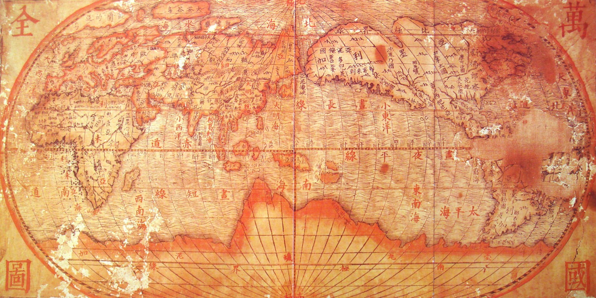
China sparked controversy when it released an ancient map dating back to the Ming Dynasty, claiming to encompass the entire Earth. Foreign Ministry spokeswoman Hua Chunying succinctly explained the map, saying, "We found this map in an archive and quickly realized its significance while studying it. Ancient Chinese dynasties claimed ownership of everything under heaven, and as their successor, the People's Republic of China inherited all these claims. Therefore, this map is conclusive proof of China's exclusive territorial rights over the entire globe." This Chinese maneuver stunned observers and those familiar with Chinese affairs. Bilahari Kausikan, Singapore's ambassador-at-large for foreign affairs, stated, "This move shows that China has grown tired of manipulating the boundaries of the South China Sea and has decided to simplify matters by simply claiming the entire world." He added, "I assure you, it is extremely audacious." World leaders expressed their dismay and astonishment, with many refusing to recognize China's claim.
One of the oldest Korean maps showing a view of the world from an East Asian perspective. It shows Africa and Europe to the west, and Asia in the center.
Interpreters in Asia (especially Korea) link these maps to a nationalist ideology: that they affirm Asia's centrality or that Asia was a significant player in the history of world maps. For example, the article "Reflection on Arabia-Africa in the Mappa Mundi of the Chosŏn Dynasty" discusses how the Kangnido map represents an Asian worldview.
There are millions of square kilometers of missing land north of Siberia that we never see on maps.”
They claim that the Mercator map, in the case of Asia, hides entire regions or merges them with other continents. Some say Siberia is much larger than we see; parts of "lost Asia" were removed from maps after the great wars; there are undeclared coastlines and islands in the Far East.
Some claim that beyond eastern Russia and the Great Wall of China lie vast, unmarked lands inhabited by isolated populations. They link these areas to the disappearances of aircraft in the north, military-restricted zones in Russia and China, and the lack of high-resolution satellite imagery for certain regions.
There is a saying that in ancient times the noble isle of Sumatra was joined to the main, until mountainous seas eroded its base and cut it off.by Camoes,The Lusiads, 1572
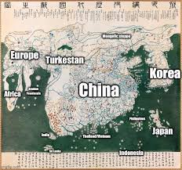
Some bloggers and scholars of “alternative history” argue that these maps indicate that Asian civilizations (China, Korea, Japan) were more geographically or exploratoryly advanced than is generally accepted in mainstream Western history. For example, some consider the Kangnido map of 1402 to be “the first world map to show Africa” from an Asian perspective.
Antarctica
Flat Earth models typically depict Antarctica not as a continent, but as an ice barrier ranging from 60,000 to 150,000 miles (depending on the version) surrounding the disc and blocking water. Some models suggest armed guards or treaties preventing access to the "outer" lands.
The 1959 Antarctic Treaty (signed by 54 countries) served as a cover-up, restricting military activity and promoting scientific cooperation. It prohibited independent exploration, effectively concealing additional continents or resources. This effectively confined humanity to a single, prison-like area.
Europe
"Europe isn't even a continent… It's the biggest geographical hoax in history!" The truth they don't want you to know is that Europe is simply a western extension of Asia, and there's no geological evidence to make it an independent continent. No tectonic plate, no real natural boundaries, no land split… nothing! The idea of a "European continent" was invented for one reason only: to give the West an identity separate and superior to the East. This is what its name actually means: the "West Asian Peninsula." Would people have believed that Europe was a "great continent"? Of course not! The boundaries between Europe and Asia (like the Ural Mountains and the Caucasus Line) aren't natural borders dividing continents, but rather deliberate human-made choices to serve historical and political narratives.
The real land is Eurasia… one continent. Europe is merely the western arm of Asia. The division into two continents came after the rise of European empires and was taught to generations until it became an unquestionable “fact.”
Simply put, the Greeks coined this term to distinguish themselves from the Persians. The Greeks were the first to use the terms "Europe" and "Asia" in ancient Western sources. They saw themselves as part of the Aegean and Mediterranean world. Everything east of the Aegean Sea and Anatolia they called Asia, and everything to its west and north they began calling Europa.
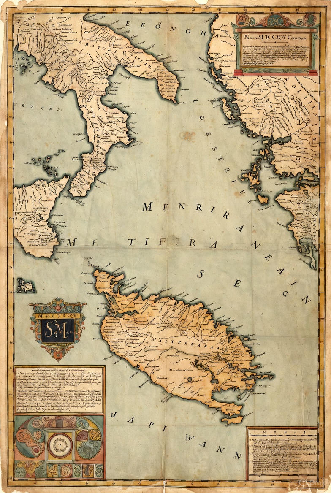
Maps of the Mediterranean drawn in the fifteenth century AD , according to a table of coordinates devised by the Alexandrian geographer Claudius Ptolemy in the second century AD , show the Maltese archipelago as a single large island, much as it looked in the thirteenth millennium BC … Ptolemy, as we will see, based himself on an earlier geographer, Marinus of Tyre – a Phoenician – who in turn had drawn on even older maps and geographical knowledge
Recent geological studies (such as the work of Reinhardt et al., 1996 and Furlani et al., 2014) show that Malta and Gozo were indeed connected as one large island during the last Ice Age (until about 13,000–11,000 BC), when the sea level was about 120 meters lower than it is today.
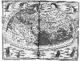
Australia
Australia is both a continent and a country. but New Zealand is on a separate continental shelf (Zealandia), sometimes called the 8th continent.
Some researchers argue that Australia is not in its true location. Governments have moved Australia on modern maps 1000–1500 km north to conceal lands to its south that, if located in their true position, would be much colder. There is an additional landmass or continent below that has been omitted from maps.
Some bloggers claim that Australia was part of a larger lost continent, often linking it to Lemuria, a continent that stretched between Asia and Australia and sank.
Older maps depict Australia as larger and more rectangular. This is often illustrated in Dieppe's 1542 map, which shows a landmass called Jave la Grande and is claimed to represent Australia, albeit in a completely different form than today's. This suggests that modern maps have distorted the shape of the continent to conceal its true form.
This is a claim that says Australia is not an island, but an entrance to lands beyond the ice wall.
There is a massive land south of Australia that doesn't show on Google Earth.
Piri Reis' map (1513 AD) shows South America connected to a large southern landmass (drawn as "Terra Australis").
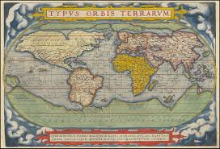
Maps of the 16th-17th century (such as Ortelius's map of 1570) show Australia connected to a vast southern landmass extending into South America and New Zealand.
America North and South
North America was only recently discovered. They say governments hid the existence of the continent or its true origins from the world for centuries. Old European maps sometimes show only the east coast, while the west coast is hidden or distorted.
Some argue that regions like northern Canada and Alaska appear small on maps, while others contend that vast mountainous regions and natural resources are invisible on official maps. Some add that there are ancient lakes and rivers whose courses have been altered by government actions or geological events.
They believe that the west coast of North America was not as it appears on old maps, that there are sunken or lost islands, and that there are “real” coastlines that have been politically altered. Some of them link this to the so-called American continent of Atlantis or lost areas under the ocean.
They claim that the islands in the Caribbean Sea have not been fully discovered, and that there are cities underwater or buried under the sand. In addition, old Spanish and Portuguese maps show islands or bodies of land that no longer exist today.
Some forums say that there are parts of the rainforest and mountainous areas that have been hidden or not accurately depicted on maps.
Theories
Lands beyond Antarctica
Some researchers say that the Earth is bigger than we study and that there are lands or continents outside the ice, and that governments have been hiding this since 1950 after the signing of the “Antarctic Treaty”.They believe there are natural ice-covered passages or restricted areas, and that aircraft are not allowed to fly over certain regions.
In the alleged memoirs of Admiral Byrd, in declassified intelligence reports, and in books such as "The Navigator Who Crossed the Ice Walls," it was revealed that the Nazis built underground bases in New Swabian Land (1938-1939) to store UFOs and advanced technology, and that Hitler emigrated there after the war. Operation Highjump (1947), led by Admiral Byrd, was an American attempt to destroy them, but it failed against the "fast flying objects."
In Mercator's famous 1554 world map, and in other later maps such as the 1569 map (which developed his projection), Mercator depicted a massive landmass in the far south, below South America, Africa, and Australia.
The painting is from UN headquarters in NY, showing ,a barrier as Antarctica, an opening & is a bit differentthan the publics used to with the land masses outside the barrier. Also you see the sun/moon as luminaries which revolve around Earth. Here the map on the UN logo is the same, broken into 33 sections.(33 again). There's also What In my opinion is actually is the most accurate map of our Earth.
The map of the Old World, drawn by Fernando Bertelli in 1565, shows Antarctica with many interesting animals; North America and Asia are not separate; and Africa is flourishing, with the Sahara Desert dotted with enormous lakes.
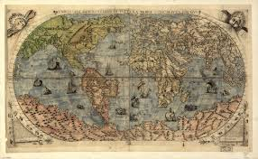
7 Earth
The surface of the moon is a reflection of the visible side of the Earth.
Airlines
Stops in Dubai, Doha (Qatar), Singapore, or Hong Kong (all in the Northern Hemisphere) make perfect sense on a flat map, forming the shortest straight line through the center (the North Pole). On a sphere, however, this is an "illogical long route" over the Indian Ocean, where refueling is possible on islands like Mauritius or Madagascar.
For other flights, such as Sydney to Santiago (Chile), they say it goes via Los Angeles (north) because a direct flight is "impossible" on a flat plane, and that companies refuse direct southbound flights to avoid revealing the truth.
They add a conspiracy theory that governments and companies (such as Qantas or Qatar Airways) are cooperating to avoid direct southerly flights, because they would expose "the rim" or Antarctica as an "ice wall".
Why are there no flights from South America to Australia? The distance is too great. The spherical map is deceiving; look at an azimuthal map. Travel across external borders is too vast to be feasible.
Opinions
What if the 7 lands mentioned in ancient traditions are the same 7 unexplored sectors beyond Antarctica?” “The triangles on old maps might represent the 7 realms, not countries.
The 7 Earths in Islam are not layers, they are lands hidden from us. They don't want us to see the real world map. The 7 zones are blocked behind the ice.
Science is deceiving us; the Earth is comprised of seven lands, not one continent, as evidenced by ancient maps.” “The Quran mentions seven lands, yet today we see seven mysterious regions on historical maps.
Research
Now geography tells us that no map can be a completely faithful representation of the earth but is instead a representation of a particular view of It held by it's cartographer varying in precision accuracy and goal
When you try searching for photographs of the Earth from space on Google, you'll find very few, and you'll notice a great similarity between the images, many of which are composite images created with Photoshop. NASA has even admitted this, stating that there is only one genuine photograph, taken by the Apollo 17 mission. However, this image shows significant inaccuracies, with the seas and land appearing in extremely vibrant colors.
Mercator Projection was invented by Flemish cartographer Gerardus Mercator in 1569. Despite being the most commonly used world map, there are misinterpretations in the sizes of and the distances between countries and continents, which have profound effects on our collective world-view.
The Mercator Map was created in 1569, when many countries had yet to exist in their modern forms. Thus, the projection of the map was politically driven to project power, over weak or unknown countries
"Every world map is distorted in some respect," Matthew Edney, a professor of geography and the history of cartography at the University of Southern Maine, told Live Science in an email.
Flat Earth maps (e.g., the azimuthal equidistant projection, often featuring the UN logo) are presented as the "real" layout, with Antarctica as the outer ring. Proponents argue globe-based maps distort distances to hide the flatness.
“Maps like the Piri Reis map prove that there were advanced civilizations that predated all recorded history, because they drew continents before they were discovered.”
René Guénon was a traditional mystical philosopher. He spoke of multiple worlds of existence and that the physical Earth is not the only plane of existence. He believed that ancient civilizations encoded their knowledge with symbols (such as numbers and geometric shapes). He was not an earth scientist or physicist.
Pictures

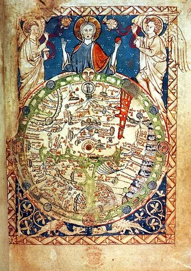
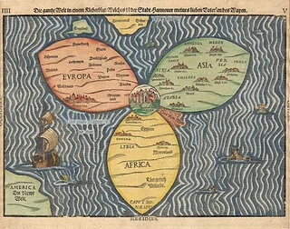
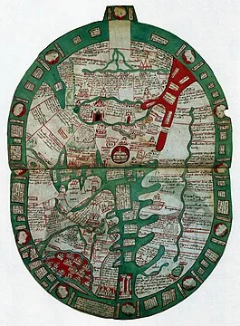
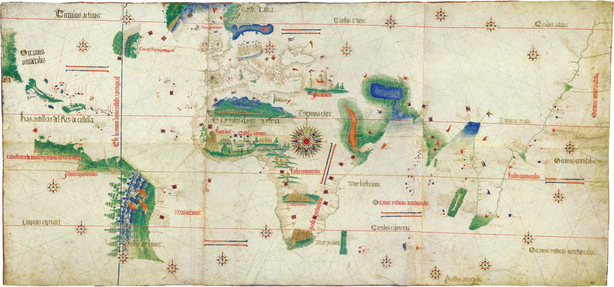